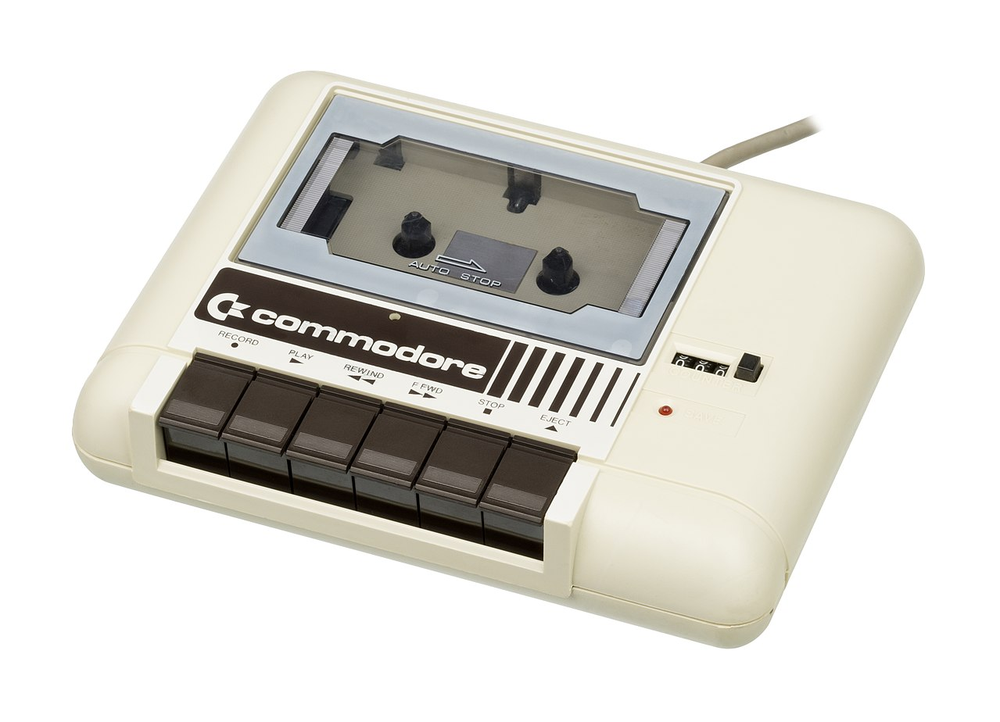

Mijn Eerste Computerliefde: De VIC-20 van Knijnenberg
Er zijn momenten in een kinderleven die zich met een helderheid in het geheugen etsen die later, volwassen ervaringen ontberen. Voor mij was dat de dag waarop mijn vader thuiskwam met een beige doos onder zijn arm. Niet uit een hypermoderne computerzaak — die bestonden nog niet in het Krommenie van begin jaren tachtig — maar van boekhandel Knijnenberg, waar je tussen de potloden en agenda's ook een revolutie kon kopen. In die doos bevond zich mijn eerste computer: de Commodore VIC-20.

De Commodore VIC-20 - mijn eerste computer (1981)
We woonden in Assendelft, en de computer kreeg zijn plek op zolder, naast het soldeerbureau van mijn vader. Die zolder was zijn domein — een werkplaats waar hij als elektronicus thuis aan projecten knutselde, waar de geur van soldeertin hing en waar components in bakjes geordend lagen. Tussen de oscilloscoop en de multimeter stond nu een Commodore, aangesloten via een RF-modulator op de 8-inch zwart-wit televisie die mijn ouders hadden gewonnen met de kerstloten van de hervormde kerk. Het beeld flikkerde, golfde zelfs een beetje, maar dat deed er niet toe. Ik was acht, misschien negen jaar oud, en dit — met zijn crèmekleurige toetsen en dat scherm dat straalde in tinten grijs die mijn fantasie zonder moeite omzette in een bijna metafysisch blauw — dit was een machine die met jou sprak.
De Kantoorvakhandel als Poort naar de Toekomst
In 1982 was de computerwereld nog niet gescheiden van de gewone wereld. Er waren geen MediaMarkten met meters aan schappen vol randapparatuur, geen GeekSquad-hoekjes met servicebureaus. Als je een computer wilde, ging je naar de kantoorvakhandel. Tussen de schrijfmachines, carbonpapier en archiefsystemen stond daar ineens het toekomstbeeld: een apparaat dat elk kind tot programmeur kon transformeren.
Boekhandel Knijnenberg was zo'n plek waar traditie en vooruitgang elkaar ontmoetten. Een zaak die zijn autoriteit ontleende aan decennia van potloodslijperij en orderboekjes, maar nu — gedreven door ondernemersdurf of simpele nieuwsgierigheid — ook in technologie handelde. Mijn vader was elektronicus van beroep. Hij had de papiervakschool gedaan en later elektronica gestudeerd op de avond-HTS, terwijl hij overdag bij Van Gelder Papier in Wormer werkte, waarheen hij elke dag fietste. Hij was geen computerkenner in de moderne zin, maar wel iemand die techniek begreep, die waarde zag in innovatie. Hij kocht de VIC-20 niet uit noodzaak, maar uit een intuïtie die geworteld was in zijn eigen pad van technische scholing: dit is iets wat mijn zoon moet hebben.
10 Aanslagen per Minuut
Het begon met de handleiding. Een dik boekje vol met voorbeeldprogramma's in BASIC, die mysterieuze taal vol PRINT en GOTO commando's. De eerste opdracht was simpel: typ het over. Maar voor een kind zonder enige typervaring was zelfs dat een marathonproject. Mijn vingers zochten de toetsen als een blinde die een onbekend landschap aftast. Tien aanslagen per minuut, als het meezat. Elk karakter een overwinning, elke regel code een klein wonder.
20 GOTO 10
RUN
De simpelheid van deze regels maskeert hun magie. Dit was de eerste keer dat ik iets creëerde dat vervolgens zelfstandig tot leven kwam. Het scherm vulde zich met de woorden HELLO WORLD, eindeloos, onvermoeibaar, totdat je op de STOP-toets drukte. Het was geen passieve consumptie zoals televisiekijken of lezen. Dit was macht over de machine. Dit was taal die de werkelijkheid vormgaf.
De Cassette Datarecorder en de Kunst van het Wachten
De Commodore 1530 Datasette - uren wachten voor één programma
Naast de computer stond de Commodore 1530 Datasette, een apparaat dat even essentieel was als archaïsch. Je stopte een cassette in de gleuf, typte het rituele commando LOAD "*",1,1, en drukte op PLAY. Dan begon het wachten. De datarecorder maakte een karakteristiek geluid — een mechanisch gezoem vermengd met de hoge pieptonen van data die als audio-signalen op het magneetlint werden gelezen. Minuten verstreken. Het was een oefening in geduld die de moderne generatie, gewend aan instant-gratificatie, volkomen vreemd zou zijn.
Als het laden eindelijk klaar was, typte je RUN en kwam het programma tot leven. Soms werkte het niet. Dan moest je de koppen van de datarecorder schoonmaken met een wattenstaafje en alcohol, de tape terugspoelen, en opnieuw beginnen. Elk succesvol geladen programma voelde als een technische overwinning.
Software via de Radio: NOS Hobbyscoop
Maar er was nog een andere, bijna magische manier om aan software te komen: NOS Hobbyscoop. Elke zaterdag zond de NOS op Hilversum 3 computerprogramma's uit als audiosignalen. Je hield je cassettespeler bij de radio, drukte op RECORD zodra de pieptonen begonnen, en hoopte dat de ontvangst goed genoeg was. Na de uitzending stopte je de cassette in de datasette en laadde het programma via de Hobbyscoop-interpreter — een speciaal programma dat de geluiden kon vertalen naar uitvoerbare code.
Het was software-distributie uit een andere tijd. Geen internet, geen downloads, maar letterlijk geluiden door de ether die codes werden. Soms lukte het perfect, soms was er te veel ruis en moest je wachten tot de volgende week voor een herhaling. Maar als het werkte — als die pieptonen transformeerden in een werkend spel of programma — was het pure magie. Het voelde alsof je deelnam aan een landelijke samenkomst van ingewijden, allemaal tegelijkertijd met hun cassettespelers bij de radio zittend, wachtend op die digitale zending uit Hilversum.
De Groeiende Vaardigheid
Weken werden maanden. Mijn vingers begonnen het toetsenbord als vanzelf te vinden. Wat begon als moeizaam zoeken, transformeerde langzaam in een vloeiende dans. De typesnelheid groeide, en daarmee mijn ambities. Ik typte niet langer alleen over wat in de handleiding stond — ik begon te experimenteren. Wat gebeurt er als ik dit getal verander? Wat als ik deze regel weglaat? Elk SYNTAX ERROR-bericht was geen frustratie, maar een aanwijzing. De machine onderwees me in precisie, geduld en logisch denken.
Tegen de tijd dat ik een jaar of tien was, begon het allemaal steeds duidelijker te worden. Ik kon zelf kleine programma's maken — niet alleen overtikken, maar bedenken en bouwen. Primitieve quiz-programma's waarin de computer een vraag stelde en ik het antwoord typte. Simpele animaties waarbij een karakter over het scherm bewoog. Elke vrijdagmiddag na school was een pelgrimstocht naar die beige doos, die grijze gloed op dat flikkerende scherm, dat cursor-blok dat knipperde met de belofte: jij kunt hier alles maken wat je wilt.
De Gouden Jaren van Type-Spelletjes
Later, toen de Commodore 64 en de MSX de markt veroverden, veranderde het landschap radicaal. Plots waren er echte computerwinkels waar je kant-en-klare spelletjes kon kopen op cassette. De bibliotheek kreeg een nieuwe sectie: naast de jeugdboeken en stripverhalen verschenen boeken vol met BASIC-listings die je thuis kon overtypen. Dit was de gouden tijd van Nederlandse computerauteurs als Hal Renko en Sam Edwards, wiens Volcanic Games en andere boeken vol stonden met avontuurlijke programma's. En dan was er nog Max Vijftigschild, wiens boeken ik verslond — als kleine jongen wist ik toen nog niet dat hij later mijn chef zou worden bij KPN (1992).
Het overtypen van deze listings was een eigen discipline. Pagina's vol met cryptische code, regel na regel, waarbij een enkele verkeerde komma of haakje het verschil betekende tussen een werkend spel en een frustrerende SYNTAX ERROR IN LINE 340. Je was uren bezig met het opsporen van overtikfouten. Je vergeleek regel voor regel, karakter voor karakter, totdat je eindelijk die ene plek vond waar een 0 een O was geworden, of waar je per ongeluk een puntkomma in plaats van een dubbele punt had getypt. Maar als het dan eindelijk werkte — dat moment van triomf was iedere minuut waard.
Ook boekhandel De Slegte in Amsterdam werd een vaste bestemming. In die stoffige winkel vol tweedehandsboeken kon je voor weinig geld oude computertijdschriften en programmeergidsen vinden. Iedere trip naar Amsterdam was niet compleet zonder een bezoek aan De Slegte, op zoek naar nieuwe listings, nieuwe ideeën, nieuwe werelden om te bouwen uit niets dan tekens op een scherm.
Ons Huis in Wormer: Het Epicentrum
Maar de echte biotoop van de computerrevolutie bevond zich dichter bij huis: de computerclub in "Ons Huis" in Wormer. Als veertienjarige fietste ik erheen door de Noord-Hollandse polders, mijn rugzak vol met cassettes en uitgeprinte listings. Dit was het epicentrum waar alle geeks, techies en nerds samenkwamen — een generatie jongens (het waren voornamelijk jongens) verenigd door een obsessie met bits en bytes.
In die ruimte hing een elektriciteit die niets te maken had met de stroom uit de stopcontacten. Er stond een wilde verzameling machines: Commodore 64's naast MSX-computers, een enkele Commodore 16, een Amstrad in de hoek, en altijd wel iemand die met trots zijn ZX Spectrum demonstreerde. Het merk deed er niet toe. De sekte had maar één geloofsartikel: zolang er maar een Zilog Z80 of een MOS 6502 processor in zat, was je welkom.
Als de avond vorderde en je het zat was om naar andermans code te staren, ging je mee naar iemand naar huis. Nog een uurtje gamen op zijn C64 of MSX, terwijl zijn moeder beneden thee zette en zich afvroeg wat die jongens toch de hele tijd voor dat beeldscherm deden. We bouwden geen kastelen van LEGO meer — we bouwden ze van code, regel voor regel, in een taal die onze ouders nooit zouden begrijpen maar die voor ons poorten opende naar oneindige werelden.
Mijn schoolvriend Marten woonde in Jisp en had een Commodore 64 — de heilige graal voor elke jonge computerfreak. Daar speelden we dagenlang. Niet uren, maar dagen waarin de tijd verdween in pixels en geluidschips. We versleten meerdere joysticks, die Competition Pro's en Quickshot's die het na maandenlange martelingen begaven. De vuurknop ging eerst, dan de richtingsschakelaars, tot het ding alleen nog bruikbaar was als briefverzwaarder.
Maar weggooien? Ondenkbaar. Als een joystick kapot ging, belandde hij op het soldeerbureau van mijn vader. Met de routine van een chirurg soldeerde hij een nieuw snoer, een nieuwe stekker, of verving hij de schakelaar. Elektronische reanimatie. Sommige joysticks keerden meerdere malen terug van de dood. Eén joystick overleefde het allemaal: de Suze Arcade-joystick, een massief geval gebouwd als een tank. Die was onverwoestbaar. En hij doet het nog steeds — ergens in een doos, wachtend op zijn volgende opdracht, decennia later nog steeds functioneel. Dat was kwaliteit uit een tijd toen dingen gemaakt werden om te blijven, niet om vervangen te worden.
Zo gingen we verder. Boulder Dash, International Karate, Impossible Mission — elk spel een universum op zichzelf, elk level een uitdaging die moest worden overwonnen. En als de controller het opgaf, maakte mijn vader hem weer heel. Die C64 van Marten ligt trouwens op dit moment in de hackerspace in Drenthe, waar hij af en toe nog wordt opgestart. Hij werkt nog steeds. Veertig jaar later, en de MOS 6510 rekent nog steeds, pixel voor pixel, geluid voor geluid. Sommige dingen weigeren simpelweg te sterven.
De Liefde Die Bleef
De VIC-20 was objectief gezien een beperkte machine. Met slechts 5 KB RAM (waarvan maar 3,5 KB beschikbaar voor programma's) was het zelfs in 1982 al niet de krachtigste computer. Maar wat het miste aan specificaties, compenseerde het in toegankelijkheid. Zodra je het aanzette, werd je begroet door de BASIC-prompt. Er was geen besturingssysteem dat je moest leren bedienen, geen installaties die nodig waren. De machine was programmeren.
Deze eerste computerliefde legde een fundament dat nooit meer zou verdwijnen. Van die beige Commodore op zolder in Assendelft naar de mainframes op het Insi, van Linux-diskettes in Noordwijkerhout tot de servers waar ik nu dagelijks mee werk — het begon allemaal met tien aanslagen per minuut en een vader die begreep dat de toekomst soms in een doos zit die je koopt bij de boekhandel.
Die oude VIC-20 bestaat niet meer. Ergens in de jaren die volgden is hij weggegooid, materiaal dat zijn nut had verloren, overbodig geworden door nieuwere, krachtigere machines. Maar het object was nooit het punt. Wat ertoe deed — wat bleef — was de kennis, de ervaring, het beleven van die periode. Die eerste regels code die ik typte, die eindeloze middagen van experimenteren, die frustraties en doorbraken: dat is wat zich inbakte in mijn denken. De machine was tijdelijk, maar wat hij me leerde is blijvend. Hij zit verweven in elke regel code die ik schrijf, in elk algoritme dat ik begrijp, in elke computer die ik openstel voor anderen. Boekhandel Knijnenberg bestaat allang niet meer, maar wat mijn vader daar kocht, blijft leven in elke cursor die knippert op elk scherm waarachter ik zit.
Literatuurverwijzingen (APA)
Commodore International. (1981). VIC-20 user's manual. Commodore Business Machines.
Edwards, S. (z.d.). Volcanic games for the VIC-20. Retrieved from http://www.vic20listings.freeolamail.com/book_volcanicgames.html
Reimer, J. (2007, 9 oktober). A history of the Commodore VIC-20. Ars Technica. https://arstechnica.com/gadgets/2007/10/the-commodore-vic-20/
Renko, H. (1984). VIC-20 spelletjes. Uitgeverij Kluwer.
Tomczyk, M. S. (1984). The home computer wars: An insider's account of Commodore and Jack Tramiel. COMPUTE! Publications.
Veit, S. (1993). Exploring the VIC. Abacus Software.
Vijftigschild, M. (1983). Programmeren voor de VIC-20. Uitgeverij Stark.